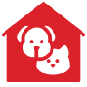
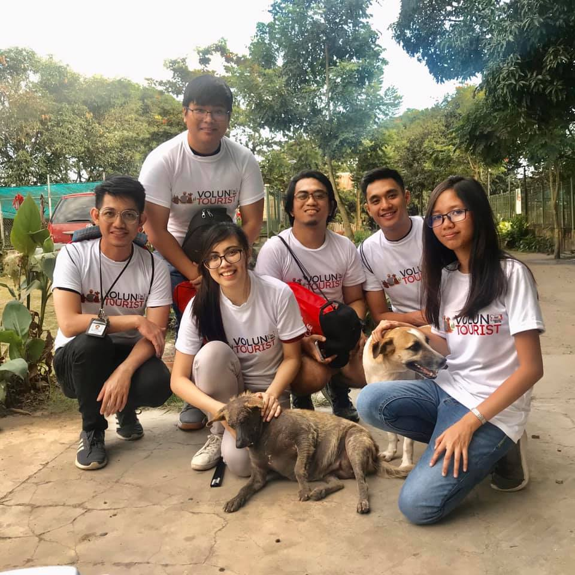
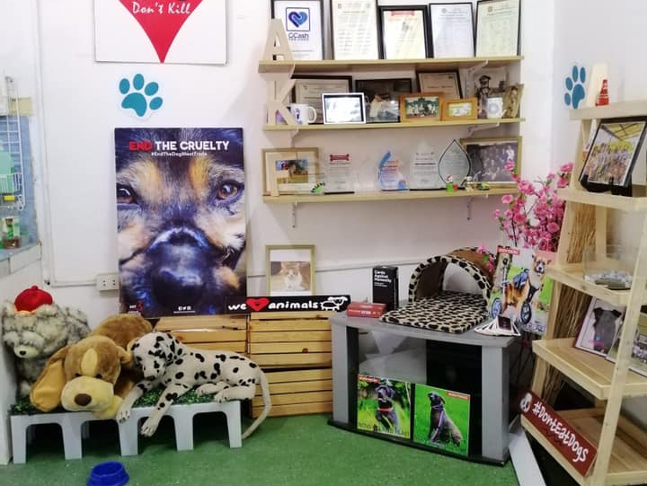
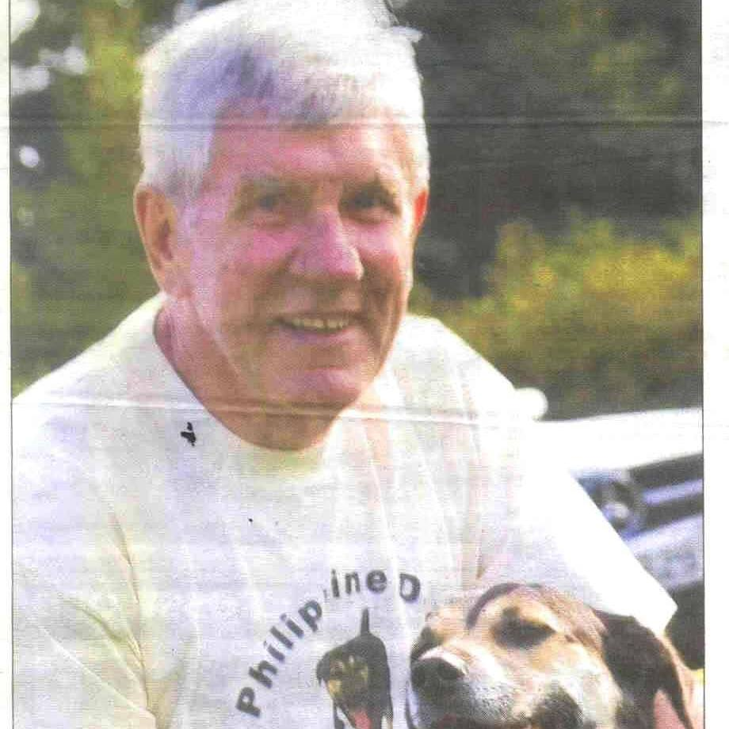
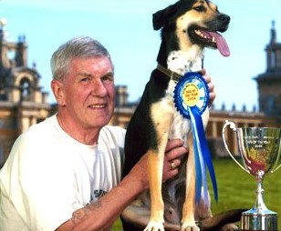

Cel +63 939-914-2403 │
akfanimalrescue@gmail.com │
Barangay Cubcub, Capas, Tarlac
BE ONE OF US.
Home
About Us
What We Do
Our Campaigns
End The Dog Meat Trade
Cage Free, Go Cruel Free!
Better Fish, Tomorrow!
Our People
Future Events
About
Us
Know more about our heartwarming animal adoption and rescue stories.
Hello!

We are the AKF family.
Animal Kingdom Foundation,
or simply AKF, is a non-profit animal welfare non-government organization (NGO) committed to improving the living and welfare conditions of animals in the country and eliminating the cruel trade of dog meat for human consumption. AKF is registered with the Securities and Exchange Commission (SEC) and duly enlisted with the Department of Agriculture’s Bureau of Animal Industry (DA – BAI).
Our Mission & Vision
Animal Kingdom Foundation aims to work in ensuring the prevention of cruelty and suffering of animals. It strives towards protection and promotion of their welfare by advocating an improvement to their living conditions, by campaigning to eliminate causes that bring about pain and discomfort to the animals. AKF will work towards a symbiotic, harmonious and healthy environment for both humans and animals.
AKF envisions a nation that is compassionate, responsible, respectful and loving towards animals as it spearheads a passionate and dedicated animal welfare campaigns resulting to every individual recognizing animals as sentient beings while embracing the tenet that compassion towards every animal is our own sole responsibility.
Our Story
Animal Kingdom Foundation was founded in 2002 by the late Charles Leslie Wartenberg driven by his love for animals. It started with Charles learning about the horrors of the cruel dog meat trade in the country and about how common of a practice it is in the provinces. Troubled by this cruel act, he arranged a team that would help save the helpless dogs from the slaughter and make the perpetrators liable from this cruelty. Due to its prevalence in the country, numerous raids and interceptions have been conducted in various locations saving the lives of thousands of dogs.
To provide shelter for the rescued dogs who were once bound for slaughter, AKF put up a rescue and rehabilitation center in Capas, Tarlac. Here, their medical needs are given and they are rehabilitated until they’re ready to be adopted by their new family. Today, AKF is one of the most respected animal welfare NGO in the country working and campaigning not only on the welfare and protection of companion animals but of farm animals as well.
 


A Sweet Story
In one of its operations against the illegal dog traders north of the Philippines, AKF rescued a 3-month old dog from a slaughterhouse in Baguio City. Sweet, as he came to be called, is just among the thousands of dogs that ends up in one of the many illegal slaughterhouses in Baguio each week. He was found cowering in a corner of a very cramped cage along with several other dogs without food and water. Earlier, 40 other dogs were brutally slaughtered in front of him, their heads smashed with a wooden club. Perhaps, it was his soulful eyes that caught the attention of then AKF Director Charles Warternberg to bring him to the UK as his pet.
“It is likely that Sweet was more of a family pet who was either stolen or sold to the dog-meat traders as he was in fairly good physical condition when we rescued him”, Charles said. From Baguio, Sweet was immediately taken to a pet hospital in Makati where he was treated and recuperated for a month prior to his flight to London. At 12:35 P.M. on August 2, 2002, Sweet arrived at the Gatwick airport to begin his new life with Charles Wartenberg.
AKF’s dog, Sweet, is the UK’s Dog of the Year for 2004. The Dog of the year is an annual contest sponsored by Daily Mail Weekend Magazine where they search for the dog with the most unusual and memorable experience. Sweet was chosen among 8,000 entrants from all over the UK where he was awarded a silver trophy, a gold medallion, and a grand prize of £1,000.
If not now, when?
They need your help!
Take part in our endeavors to give the love that they deserve and improve
their living conditions.